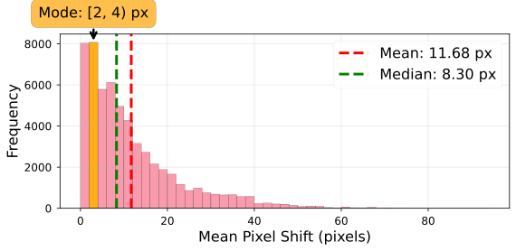
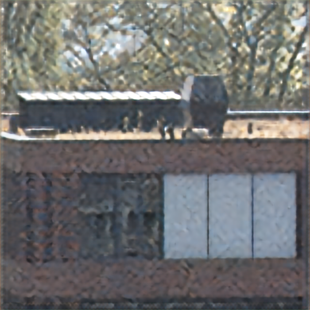
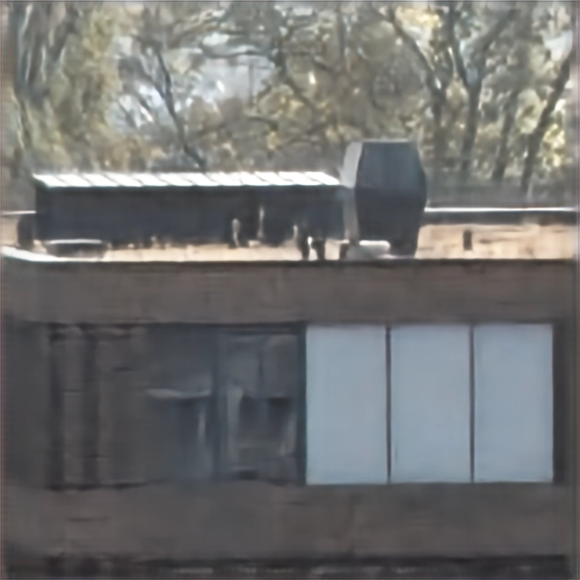
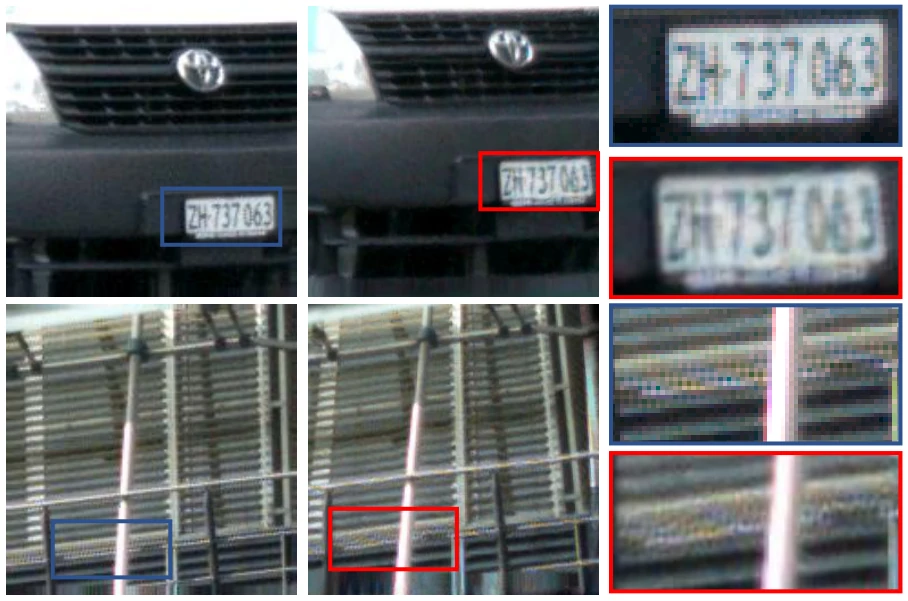
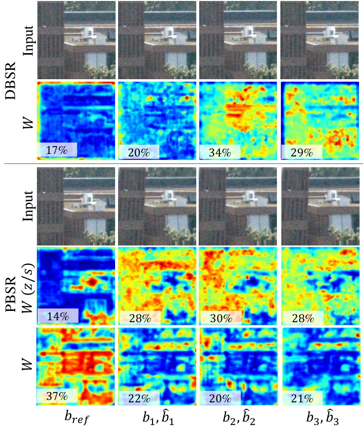

1Toyota Technological Institute2Frontier Research Center, Toyota Motor Corporation
TL;DR PBSR turns a single photo into a pseudo-burst with zero-shot novel view synthesis, so that a burst super-resolution network can use multi-frame cues without capturing a burst.
×4 super-resolutionPBSR-14 (left) vs. SISR (DBSR-1) (right)
Abstract
Burst super-resolution (BSR) achieves higher reconstruction fidelity than single-image super-resolution (SISR) by aggregating sub-pixel information from multiple frames. However, it requires a burst of frames captured under near-static conditions, and such frames are unavailable for single photographs or archival images. We propose Pseudo-Burst Super-Resolution (PBSR), which brings BSR-style reconstruction to the single-image input setting by synthesizing pseudo-burst frames via zero-shot novel view synthesis (NVS). PBSR first generates pseudo-burst frames with realistic parallax using a viewpoint sampling strategy calibrated to the pixel-shift distribution of real burst datasets. The frames are then processed by a BSR backbone equipped with a geometry-aware alignment module that reuses the NVS camera parameters and estimated depth. While the NVS stage is zero-shot, the backbone is fine-tuned with an artifact-aware adaptation so that it can exploit the synthesized frames despite their generative artifacts. Experiments on the BurstSR dataset show that PBSR consistently improves in PSNR, SSIM, and LPIPS over the single-frame baseline with the same reconstruction backbone.
SISR uses one image, and BSR needs a real burst. PBSR synthesizes pseudo-burst frames from one image and reconstructs them with a BSR network.
Calibrated viewpoint sampling
Camera offsets are set so that the resulting pixel shifts (about 4–9 px) fall within the range seen in real BurstSR bursts.
Zero-shot pseudo-burst generation
ZeroNVS renders the input from the sampled nearby viewpoints. The frames carry depth-dependent motion parallax, which image-plane shifts cannot produce.
Geometry-aware burst SR
NVS-GF (NVS-Parametrized Geometric Flow) turns the sampled camera parameters and an estimated depth map into flow fields for alignment. Artifact-aware adaptation fine-tunes the DBSR backbone on simulated pseudo-bursts.

Mean pixel shifts in real BurstSR bursts (mode 2–4 px, median 8.30 px). The sampled viewpoints give shifts within this mode-to-median range.
Sharper than the single-frame baseline, from a single capture
All methods use the DBSR (Deep Burst Super-Resolution; Bhat et al., CVPR 2021) backbone; PBSR-14 adds artifact-aware fine-tuning. SISR (DBSR-1) runs DBSR on the single input frame, i.e., the SISR setting. Drag the divider to compare PBSR-14 (left) with the method chosen below. DBSR-14 uses 14 real burst frames and serves as an upper reference.


PBSR-14SISR (DBSR-1)
×4 SR on BurstSR validation crops. Scenes 1–5 are the crops shown in the paper. Scenes 6–8 were selected from crops with a typical (median to 90th percentile) improvement of PBSR-14 over DBSR-1.
Better than the single-frame baseline in all three metrics
×4 SR on the BurstSR dataset with the same DBSR backbone. Underlined PBSR values beat DBSR-1. DBSR-1 corresponds to the SISR setting. DBSR-N uses N real frames; PBSR-N uses one real frame and N−1 pseudo-burst frames. (z/s): zero-shot backbone without artifact-aware adaptation.
Metrics versus burst length N. DBSR uses N real frames. PBSR uses one real frame and N−1 pseudo-burst frames. With adaptation, PSNR and SSIM rise with N while LPIPS slightly worsens. PBSR does not reach the PSNR and SSIM of DBSR-2, which uses two real frames. Click a plot to open it at full size.
Why it works
Parallax, not just more inputs
Pseudo frames made by 2D shifts and rotations (Shift+Rot.) add inputs but no parallax. NVS pseudo-bursts score better on every metric (adapted PBSR-14, BurstSR validation set).
Pseudo frames
PSNR ↑
SSIM ↑
LPIPS ↓
Shift+Rot.
44.985
0.972
0.075
Zero-shot NVS
45.633
0.976
0.044
Adaptation learns to trust the real frame

Pseudo-burst frames contain artifacts: a distorted license plate (top) and varying noise and blur (bottom).

Fusion weights with four input frames. Without adaptation (W (z/s)), the real reference frame receives 14% of the weight. With adaptation (W), it receives 37%.
Citation
@article{kondo2026pbsr,
title = {{PBSR}: Pseudo-Burst Super-Resolution via Zero-Shot Novel View Synthesis},
author = {Kondo, Yuki and Ukita, Norimichi},
journal = {New Generation Computing},
volume = {44},
number = {4},
pages = {32},
year = {2026},
doi = {10.1007/s00354-026-00336-6}
}